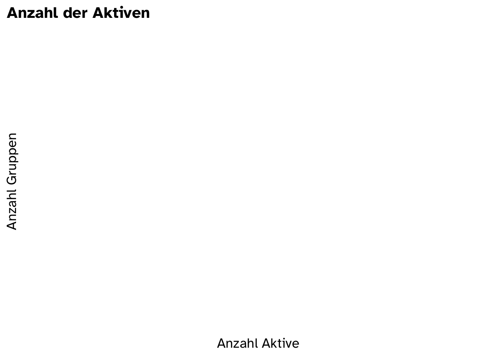
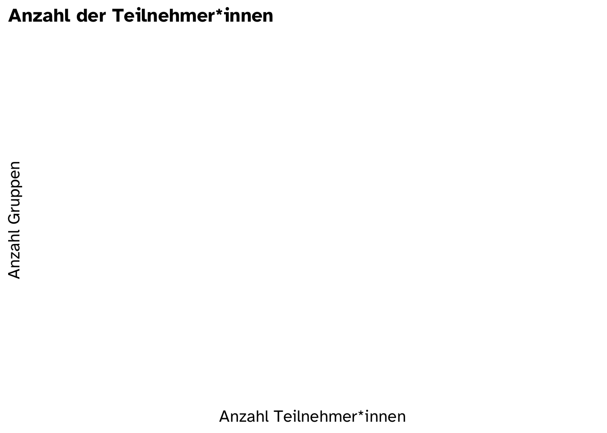
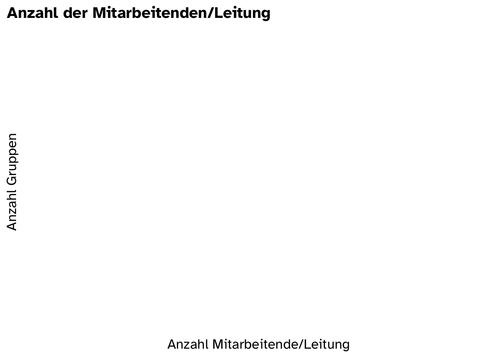
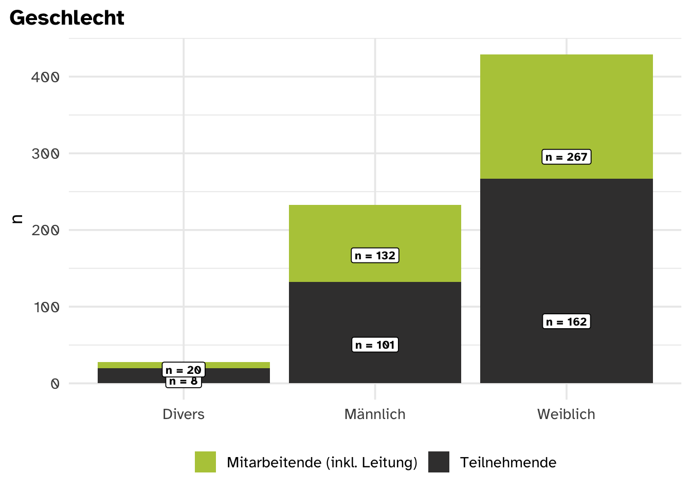
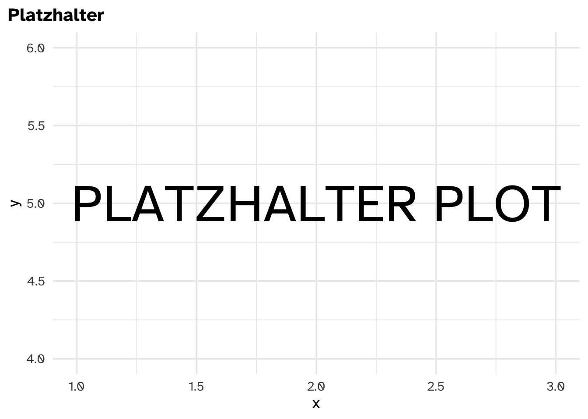
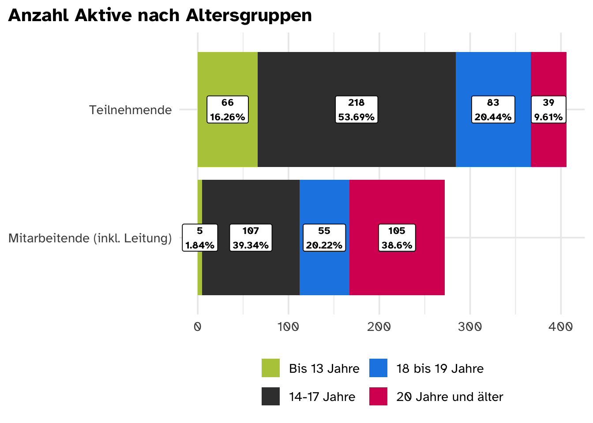

?meta:params.region_name
Welcome to ?meta:params.region_name
Default Region
Datenquelle
Relevante Fragen:
- Frage “In welcher Region liegt deine Ortsgruppe?” im Ortsgruppen Fragebogen
- Frage “Wie heißt deine Ortsgruppe?” im Ortsgruppen Fragebogen
- Frage “Wie heißt deine Ortsgruppe?” im Teilnehmer*innen Fragebogen
Ortsgruppen, die von Teilnehmenden genannt werden, bekommen das Label “TN” in der Spalte Datenquelle. Ortsgruppen, für die der Ortsgruppen-Fragebogen ausgefüllt wurde, bekommen das Label “OG” in der Spalte Datenquelle. Beachte: Manche Ortsgruppen kommen nur im TN-Fragebogen vor, da die Ortsgruppenleitung den OG-Fragebogen nicht beantwortet hat
Tip
Mit einem Klick auf den :arrow_forward: kannst du jede Region öffnen und eine Liste ihrer Ortsgruppen sehen.
Anzahl Ortsgruppen
- 0 Anzahl von Antworten auf den Ortsgruppen Fragebogen
- 0 Anzahl verschiedener Werte bei den Antworten zur Frage “Wie heißt deine Ortsgruppe?” im Teilnehmer*innen Fragebogen
Anzahl Aktive
| Fragebogen | Teilnehmer*innen | Leitung und Mitarbeitende | Insgesamt |
|---|---|---|---|
| Teilnehmer*innen Fragebogen | 01 | nicht abgefragt | nicht errechenbar |
| Ortsgruppen Fragebogen | 0 | 0 | 0 |
Es gibt zwischen 0 und 0 Ortsgruppen.
Insgesamt sind in den Ortsgruppen von TEN SING 0 Personen aktiv.
Davon sind zwischen 0 und 0 als Teilnehmer*innen engagiert. 0 Personen arbeiten für TEN SING oder engagieren sich in der Leitung einer Ortsgruppe.
Ortsgruppengröße
Hier wird die Anzahl aller Aktiven betrachtet. Diese ist definiert als Summe von Teilnehmer*innen und Leitung und Mitarbeitenden.
Im Durchschnitt hat eine TenSing-Ortsgruppe NaN Aktive. Dabei ist die Spannbreite recht groß. Die kleinste Ortsgruppe hat Aktive, die größte widerrum - Aktive.

Hier wird die Anzahl der Teilnehmer*innen betrachtet: Im Durchschnitt hat eine TenSing-Ortsgruppe NaN Teilnehmer*innen (TN). Dabei ist die Spannbreite recht groß. Die kleinste Ortsgruppe hat TN, die größte widerrum - TN.


Interpretationshilfe
Die Grafik zeigt auf der waagerechten Achse die Gruppengröße und auf der senkrechten Achse, wie viele Gruppen diese Gruppengröße haben. Die gestrichelte Linie zeigt die mittlere Gruppengröße an (Mittelwert).
Geschlecht



Alter


Footnotes
Anzahl der Antworten auf den Teilnehmer*innen Fragebogen↩︎